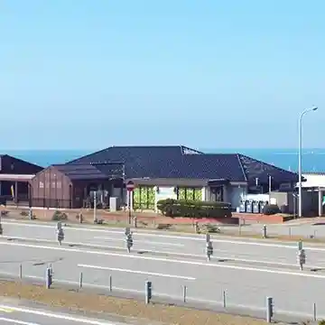
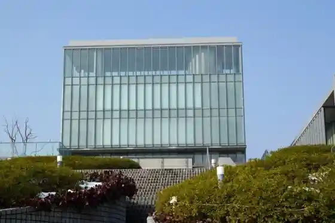
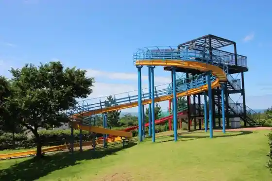

Roadside Station Takamatsu
Kahoku, Ishikawa · 076-281-2221 · Official / source link

Ishikawaken Nishida Kitaro Kinen Tetsugaku Kan
Kahoku, Ishikawa · 076-283-6600 · Official / source link

Nishida Kitaro Kinen Tetsugaku Kan (Tetsugaku no Mori) Raitoappu
Kahoku, Ishikawa · 076-283-6600 · Official / source link
Nanatsuka Chuo Park
Kahoku, Ishikawa · 076-285-2191 · Official / source link

Sakanaryori Minshuku
Kahoku, Ishikawa · 076-283-3455 · Official / source link
Umikkorando Nanatsuka Umi to Nagisa no Museum
Kahoku, Ishikawa · 076-283-8880 · Official / source link
U no Ke General Park
Kahoku, Ishikawa · 076-283-4505 · Official / source link
KAJI FACTORY PARK
Kahoku, Ishikawa · 076-255-6111 · Official / source link
Kita Ie Shidare Sakura
Kahoku, Ishikawa · Official / source link
Takamatsu Hokubu Beach
Kahoku, Ishikawa · 076-283-1112 · Official / source link
Kyu Shirao Lighthouse Onigayama
Kahoku, Ishikawa · Official / source link
Kamo Shrine
Kahoku, Ishikawa · 076-285-0365 · Official / source link
Kahoku Boranteia Kanko Gaido (Kahoku Yume Annai Sumairu)
Kahoku, Ishikawa · 076-204-6822 · Official / source link
Akurosu Takamatsu (Joiakurosu)
Kahoku, Ishikawa · 076-281-8000 · Official / source link
Kochi Tanibayashi Michi no Sakura Michi
Kahoku, Ishikawa · 076-283-1112 · Official / source link
Takamatsu Rekishi Park
Kahoku, Ishikawa · 076-283-1112 · Official / source link
Taikai Nishiyama Yayoi Village
Kahoku, Ishikawa · Official / source link
Kamiyamada Kaizuka (Kuni Shitei Historic Site)
Kahoku, Ishikawa · Official / source link
Naka Town Tori no Sakura Namiki
Kahoku, Ishikawa · 076-283-1112 · Official / source link
Kahoku Yakusho
Kahoku, Ishikawa · 076-283-1111 · Official / source link